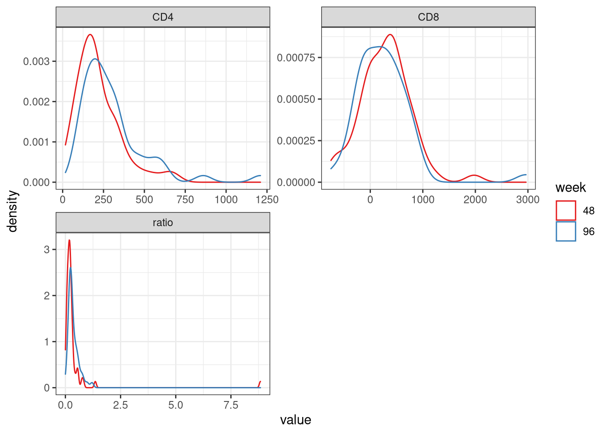

Last updated: 2022-04-05
Checks: 6 1
Knit directory: advanz4/
This reproducible R Markdown analysis was created with workflowr (version 1.7.0). The Checks tab describes the reproducibility checks that were applied when the results were created. The Past versions tab lists the development history.
The R Markdown file has unstaged changes. To know which version of the R Markdown file created these results, you’ll want to first commit it to the Git repo. If you’re still working on the analysis, you can ignore this warning. When you’re finished, you can run wflow_publish to commit the R Markdown file and build the HTML.
Great job! The global environment was empty. Objects defined in the global environment can affect the analysis in your R Markdown file in unknown ways. For reproduciblity it’s best to always run the code in an empty environment.
The command set.seed(20211203) was run prior to running the code in the R Markdown file. Setting a seed ensures that any results that rely on randomness, e.g. subsampling or permutations, are reproducible.
Great job! Recording the operating system, R version, and package versions is critical for reproducibility.
Nice! There were no cached chunks for this analysis, so you can be confident that you successfully produced the results during this run.
Great job! Using relative paths to the files within your workflowr project makes it easier to run your code on other machines.
Great! You are using Git for version control. Tracking code development and connecting the code version to the results is critical for reproducibility.
The results in this page were generated with repository version 93ba24c. See the Past versions tab to see a history of the changes made to the R Markdown and HTML files.
Note that you need to be careful to ensure that all relevant files for the analysis have been committed to Git prior to generating the results (you can use wflow_publish or wflow_git_commit). workflowr only checks the R Markdown file, but you know if there are other scripts or data files that it depends on. Below is the status of the Git repository when the results were generated:
Ignored files:
Ignored: .Rhistory
Ignored: .Rproj.user/
Ignored: analysis/.Rhistory
Ignored: analysis/output/mre_data/SpeciesQuantification/Metaphlan3/NMDS/
Ignored: data/mre.rds
Untracked files:
Untracked: Metadata/MetadataManagement/.~lock.LabData.xls#
Unstaged changes:
Deleted: Metadata/.~lock.2022_04_01_clean_metadata_LIMS.csv#
Modified: analysis/335_BLMicrobiome_vs_ImmuneResponse.Rmd
Note that any generated files, e.g. HTML, png, CSS, etc., are not included in this status report because it is ok for generated content to have uncommitted changes.
These are the previous versions of the repository in which changes were made to the R Markdown (analysis/335_BLMicrobiome_vs_ImmuneResponse.Rmd) and HTML (docs/335_BLMicrobiome_vs_ImmuneResponse.html) files. If you’ve configured a remote Git repository (see ?wflow_git_remote), click on the hyperlinks in the table below to view the files as they were in that past version.
| File | Version | Author | Date | Message |
|---|---|---|---|---|
| Rmd | 93ba24c | cblazquez | 2022-04-05 | added delta CD4/CD8 density plot to 335_BLMicrobiome.RMd |
| html | 93ba24c | cblazquez | 2022-04-05 | added delta CD4/CD8 density plot to 335_BLMicrobiome.RMd |
| Rmd | a3e13cc | cblazquez | 2022-04-04 | diversity comparisons between CD4delta and microbiome at basal (335_BLMicrobiome…RMD) |
| html | c20090b | cblazquez | 2022-04-01 | Compiled taxa ranking html + several bug fixes |
| Rmd | 1930f16 | Marc Noguera-Julian | 2022-03-29 | Create 335_BLMicrobiome_vs_ImmuneResponse.Rmd |
mymre <- here::here("data","mre.rds") %>%
readRDS(.)
metadata <-get_meta(mymre)
cat_vector <- get_cat(mymre) %>%
pull(CategoricalVariable)
long_var <- get_lon(mymre) %>%
pull(LongitudinalVariable)
id_var <- get_lon(mymre) %>%
pull(LinkVariable)GR <- get_diversity(mymre, type = "igc", res_slot = "dataTable")
Threshold <- GR %>%
dplyr::select(SampleID, NumberMappedReads) %>%
unique() %>%
summarise(Q = quantile(NumberMappedReads,0.02)) %>% ### Again, you are using the full data table to calculate percentiles. This is wrong.
as.numeric()
richness_df <-
GR %>%
filter(ReadCountReal >= Threshold) %>% ### Get the Mapped Read count (per-sample) just above the threshold
group_by(SampleID) %>%
summarise(across(everything(), min)) %>%
ungroup() %>%
select(SampleID, GeneNumber) %>%
left_join(., metadata, by="SampleID") %>%
select(id_var = !!sym(id_var),
long_var = !!sym(long_var),
cat_vector,
GeneNumber) %>%
filter(long_var == 0)
c("CD4diff_48", "CD8diff_48") %>%
set_names() %>%
map(function(cat_var){
richness_df %>%
dplyr::select(id_var,
cat_var = !!sym(cat_var),
GeneNumber) %>%
filter(!is.na(cat_var)) %>%
ggplot(., aes(x=cat_var, y=GeneNumber, fill = cat_var))+
geom_violin(draw_quantiles = T) +
# geom_boxplot(fill="lightgrey", width=0.5, na.rm=T) +
geom_point() +
scale_fill_brewer(palette="Set1") +
ggpubr::stat_compare_means(method="wilcox",label = "p.signif", hide.ns = T) +
theme_bw() +
labs(fill = cat_var)
})$CD4diff_48
| Version | Author | Date |
|---|---|---|
| 93ba24c | cblazquez | 2022-04-05 |
$CD8diff_48
| Version | Author | Date |
|---|---|---|
| 93ba24c | cblazquez | 2022-04-05 |
No differences in basal Gene richness were found between patients with an increase of CD4 higher than 50 counts/ul and whose with lower increase. The same could be observed in CD8 counts.
ids <- metadata %>%
dplyr::group_by(record_id) %>%
dplyr::filter(time_point %in% c(0,48)) %>%
dplyr::filter(!is.na(CD4)) %>%
dplyr::filter(!is.na(CD8)) %>%
dplyr::arrange(time_point) %>%
dplyr::summarise(n=n()) %>%
dplyr::filter(n==2) %>%
dplyr::pull(record_id)
deltas <- metadata %>%
# dplyr::filter(record_id %in% ids) %>%
dplyr::filter(time_point %in% c(0,48,96)) %>%
dplyr::select(record_id, time_point,CD4,CD8) %>%
dplyr::mutate(ratio = CD4/CD8) %>%
dplyr::group_by(record_id) %>%
dplyr::arrange(record_id,time_point) %>%
tidyr::pivot_wider(id_cols = record_id, names_from= time_point, values_from = c(CD4,CD8, ratio)) %>%
dplyr::mutate(
deltaCD4_48 = CD4_48 - CD4_0,
deltaCD8_48 = CD8_48 - CD8_0,
deltaCD4_96 = CD4_96 - CD4_0,
deltaCD8_96 = CD8_96 - CD8_0,
deltaratio_48 = ratio_48 - ratio_0,
deltaratio_96 = ratio_96 - ratio_0) %>%
dplyr::select(record_id, contains("delta"))
deltas %>%
pivot_longer(cols=c(deltaCD4_48,deltaCD8_48,deltaCD4_96,deltaCD8_96, deltaratio_48, deltaratio_96)) %>%
mutate(term = str_remove_all(name, "delta|_48|_96"),
tp = str_remove_all(name, ".*(?<=_)")) %>%
ggplot(., aes(color=tp)) +
geom_density(aes(x=value), alpha=0.4) +
facet_wrap(~ term, scales="free", ncol = 2) +
# geom_density(data=pivot_longer(cols=c(deltaCD4,deltaCD8)),aes(x=value), alpha=0.4) +
theme_bw() +
scale_color_brewer(palette = "Set1")+
labs(color="week")
deltas %>%
select(contains("delta")) %>%
colnames() %>%
set_names() %>%
map(~{
summary(deltas[,.x])
})$record_id
record_id
Length:80
Class :character
Mode :character
$deltaCD4_48
deltaCD4_48
Min. : 17.0
1st Qu.:133.6
Median :189.0
Mean :219.9
3rd Qu.:300.0
Max. :683.0
NA's :21
$deltaCD8_48
deltaCD8_48
Min. :-743.6
1st Qu.: -19.5
Median : 311.0
Mean : 282.5
3rd Qu.: 521.5
Max. :1975.0
NA's :21
$deltaCD4_96
deltaCD4_96
Min. : 90
1st Qu.: 180
Median : 252
Mean : 315
3rd Qu.: 342
Max. :1210
NA's :31
$deltaCD8_96
deltaCD8_96
Min. :-748.0
1st Qu.:-140.0
Median : 201.0
Mean : 232.3
3rd Qu.: 481.0
Max. :2963.0
NA's :31
$deltaratio_48
deltaratio_48
Min. :0.000655
1st Qu.:0.123930
Median :0.188536
Mean :0.389095
3rd Qu.:0.286597
Max. :8.837443
NA's :21
$deltaratio_96
deltaratio_96
Min. :0.0176
1st Qu.:0.2131
Median :0.2729
Mean :0.3791
3rd Qu.:0.4589
Max. :1.5978
NA's :31 The last piece of output (summaries) tell there is a great ammount of missing data. This is due to a combination of many patients missing a sample and a few not having entries for analytical data:
no0 <- metadata %>%
filter(!record_id %in% metadata[metadata$time_point == 0, ]$record_id) %>%
pull(record_id)
##patients without lymphocite data but with microbiome sample
no48_CD4 <- metadata %>%
filter(is.na(CD4) & !is.na(SampleID)) %>%
filter(time_point == 48) %>%
pull(record_id)
no48_CD8 <- metadata %>%
filter(is.na(CD8) & !is.na(SampleID)) %>%
filter(time_point == 48) %>%
pull(record_id)
no96_CD4 <- metadata %>%
filter(is.na(CD4)& !is.na(SampleID)) %>%
filter(time_point == 96) %>%
pull(record_id)
no96_CD8 <- metadata %>%
filter(is.na(CD8)& !is.na(SampleID)) %>%
filter(time_point == 96) %>%
pull(record_id)
# patients without sample
noS48 <- metadata %>%
filter(!record_id %in% metadata[metadata$time_point == 48, ]$record_id) %>%
pull(record_id)
noS96 <- metadata %>%
filter(!record_id %in% metadata[metadata$time_point == 96, ]$record_id) %>%
pull(record_id)
totalMissing_CD4_48 <- length(unique(c(no0, no48_CD4, noS48)))
totalMissing_CD4_96 <- length(unique(c(no0,no96_CD4, noS96)))
totalMissing_CD8_48 <- length(unique(c(no0, no48_CD8, noS48)))
totalMissing_CD8_96 <- length(unique(c(no0,no96_CD8, noS96)))
totalMissing_CD4_48[1] 21totalMissing_CD4_96[1] 31totalMissing_CD8_96[1] 31totalMissing_CD8_96[1] 31Adding the different kind of missing data checks out with the summaries. The biggest issue came with patients not having no sample whatsoever for such timepoints. Of which: 25 didn’t have a basal sample, 22 didnt have sample for week 48 and 30 for week 96.
basal_mre <- metadata %>%
filter(time_point == 0) %>%
pull(SampleID) %>%
metar::filter_samples(mymre,sample_ids = .)
basal_mre@metadata@categorical_vals <- categoricalVariablesDF %>%
filter(CategoricalVariable %in% "group")
##Error in utils::combn(., 2) : n < m Error given by too few observations in one of the levels of CD4diff_48The goal of this analysis is to describe the patients baseline microbiome vs immune response either using:
It may be useful to try to classify patients solely on CD4/CD8/immune markers and the contrast this classification with microbiome composition
Also it is relevant to show that the baseline microbiom was NOT different between ARMs (DTG/DRVr)
sessionInfo()R version 4.0.5 (2021-03-31)
Platform: x86_64-redhat-linux-gnu (64-bit)
Running under: Fedora 34 (Workstation Edition)
Matrix products: default
BLAS/LAPACK: /usr/lib64/libflexiblas.so.3.1
locale:
[1] LC_CTYPE=en_US.UTF-8 LC_NUMERIC=C
[3] LC_TIME=en_US.UTF-8 LC_COLLATE=en_US.UTF-8
[5] LC_MONETARY=en_US.UTF-8 LC_MESSAGES=en_US.UTF-8
[7] LC_PAPER=en_US.UTF-8 LC_NAME=C
[9] LC_ADDRESS=C LC_TELEPHONE=C
[11] LC_MEASUREMENT=en_US.UTF-8 LC_IDENTIFICATION=C
attached base packages:
[1] stats graphics grDevices utils datasets methods base
other attached packages:
[1] metar_0.1.4 RColorBrewer_1.1-2 forcats_0.5.1 stringr_1.4.0
[5] dplyr_1.0.8 purrr_0.3.4 readr_2.1.0 tidyr_1.2.0
[9] tibble_3.1.6 ggplot2_3.3.5 tidyverse_1.3.1
loaded via a namespace (and not attached):
[1] estimability_1.3 coda_0.19-4
[3] knitr_1.37 multcomp_1.4-17
[5] DelayedArray_0.16.3 data.table_1.14.2
[7] DataExplorer_0.8.2 RCurl_1.98-1.5
[9] generics_0.1.2 BiocGenerics_0.36.1
[11] TH.data_1.1-0 mixOmics_6.14.1
[13] future_1.23.0 correlation_0.7.1.1
[15] tzdb_0.2.0 bayesm_3.1-4
[17] xml2_1.3.2 lubridate_1.8.0
[19] httpuv_1.6.3 SummarizedExperiment_1.20.0
[21] assertthat_0.2.1 WRS2_1.1-3
[23] xfun_0.30 hms_1.1.1
[25] jquerylib_0.1.4 evaluate_0.15
[27] promises_1.2.0.1 DEoptimR_1.0-9
[29] fansi_1.0.2 dbplyr_2.1.1
[31] readxl_1.3.1 igraph_1.2.11
[33] DBI_1.1.1 htmlwidgets_1.5.4
[35] reshape_0.8.8 tensorA_0.36.2
[37] rARPACK_0.11-0 kSamples_1.2-9
[39] stats4_4.0.5 Rmpfr_0.8-7
[41] paletteer_1.4.0 ellipsis_0.3.2
[43] RSpectra_0.16-0 ggpubr_0.4.0
[45] backports_1.4.1 insight_0.14.5.1
[47] permute_0.9-7 compositions_2.0-2
[49] libcoin_1.0-9 MatrixGenerics_1.2.1
[51] vctrs_0.3.8 Biobase_2.50.0
[53] here_1.0.1 Cairo_1.5-12.2
[55] abind_1.4-5 cachem_1.0.6
[57] withr_2.5.0 ggforce_0.3.3
[59] robustbase_0.93-9 emmeans_1.7.0
[61] vegan_2.5-7 cluster_2.1.2
[63] ape_5.6-2 crayon_1.5.0
[65] ellipse_0.4.2 labeling_0.4.2
[67] pkgconfig_2.0.3 SuppDists_1.1-9.5
[69] tweenr_1.0.2 GenomeInfoDb_1.26.7
[71] nlme_3.1-153 statsExpressions_1.2.0
[73] blme_1.0-5 rlang_1.0.2
[75] globals_0.14.0 lifecycle_1.0.1
[77] sandwich_3.0-1 selbal_0.1.0
[79] phyloseq_1.34.0 modelr_0.1.8
[81] cellranger_1.1.0 rprojroot_2.0.2
[83] polyclip_1.10-0 matrixStats_0.61.0
[85] datawizard_0.2.1.9000 Matrix_1.3-4
[87] mc2d_0.1-21 carData_3.0-5
[89] Rhdf5lib_1.12.1 boot_1.3-28
[91] zoo_1.8-9 reprex_2.0.1
[93] whisker_0.4 GlobalOptions_0.1.2
[95] png_0.1-7 rjson_0.2.20
[97] PMCMRplus_1.9.3 parameters_0.15.0.1
[99] bitops_1.0-7 pROC_1.18.0
[101] rhdf5filters_1.2.1 Biostrings_2.58.0
[103] workflowr_1.7.0 shape_1.4.6
[105] multcompView_0.1-8 coin_1.4-2
[107] arm_1.12-2 parallelly_1.28.1
[109] lefser_1.0.0 rstatix_0.7.0
[111] S4Vectors_0.28.1 ggsignif_0.6.3
[113] scales_1.1.1 memoise_2.0.0
[115] magrittr_2.0.2 plyr_1.8.6
[117] zlibbioc_1.36.0 compiler_4.0.5
[119] clue_0.3-60 lme4_1.1-28
[121] cli_3.2.0 ade4_1.7-18
[123] XVector_0.30.0 listenv_0.8.0
[125] patchwork_1.1.1 MASS_7.3-54
[127] mgcv_1.8-38 ggside_0.1.3
[129] tidyselect_1.1.2 stringi_1.7.6
[131] highr_0.9 yaml_2.3.5
[133] ggrepel_0.9.1 grid_4.0.5
[135] sass_0.4.0 tools_4.0.5
[137] parallel_4.0.5 circlize_0.4.13
[139] rstudioapi_0.13 modules_0.10.0
[141] foreach_1.5.2 git2r_0.29.0
[143] gridExtra_2.3 farver_2.1.0
[145] digest_0.6.29 shiny_1.7.1
[147] networkD3_0.4 BWStest_0.2.2
[149] Rcpp_1.0.8 car_3.0-12
[151] GenomicRanges_1.42.0 broom_0.7.12
[153] performance_0.8.0.1 later_1.3.0
[155] httr_1.4.2 ComplexHeatmap_2.6.2
[157] colorspace_2.0-3 rvest_1.0.2
[159] fs_1.5.0 IRanges_2.24.1
[161] splines_4.0.5 rematch2_2.1.2
[163] multtest_2.46.0 xtable_1.8-4
[165] gmp_0.6-2.1 jsonlite_1.8.0
[167] nloptr_1.2.2.3 corpcor_1.6.10
[169] zeallot_0.1.0 modeltools_0.2-23
[171] R6_2.5.1 broom.mixed_0.2.7
[173] pillar_1.7.0 htmltools_0.5.2
[175] mime_0.12 glue_1.6.2
[177] fastmap_1.1.0 minqa_1.2.4
[179] BiocParallel_1.24.1 codetools_0.2-18
[181] mvtnorm_1.1-3 utf8_1.2.2
[183] lattice_0.20-45 bslib_0.3.1
[185] logger_0.2.2 survival_3.2-13
[187] rmarkdown_2.11 biomformat_1.18.0
[189] merTools_0.5.2 munsell_0.5.0
[191] GetoptLong_1.0.5 rhdf5_2.34.0
[193] GenomeInfoDbData_1.2.4 iterators_1.0.14
[195] ggstatsplot_0.9.0 haven_2.4.3
[197] reshape2_1.4.4 gtable_0.3.0
[199] bayestestR_0.11.5.1